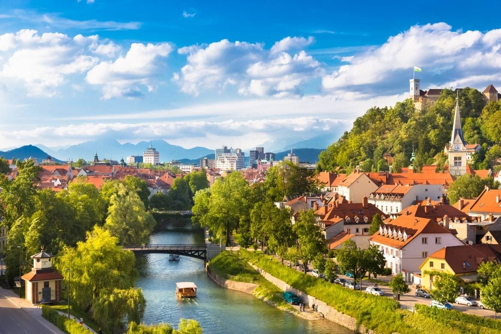
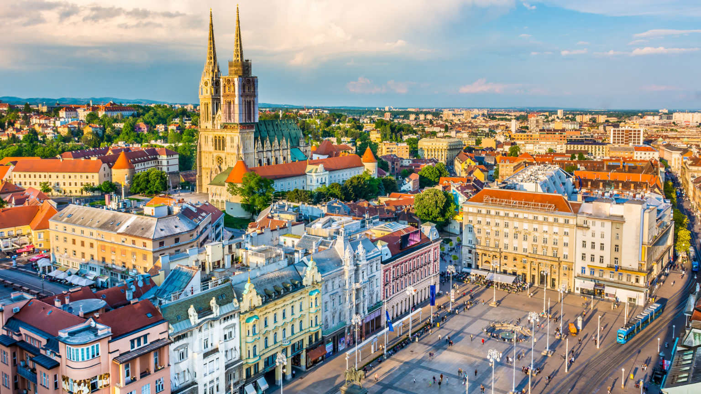
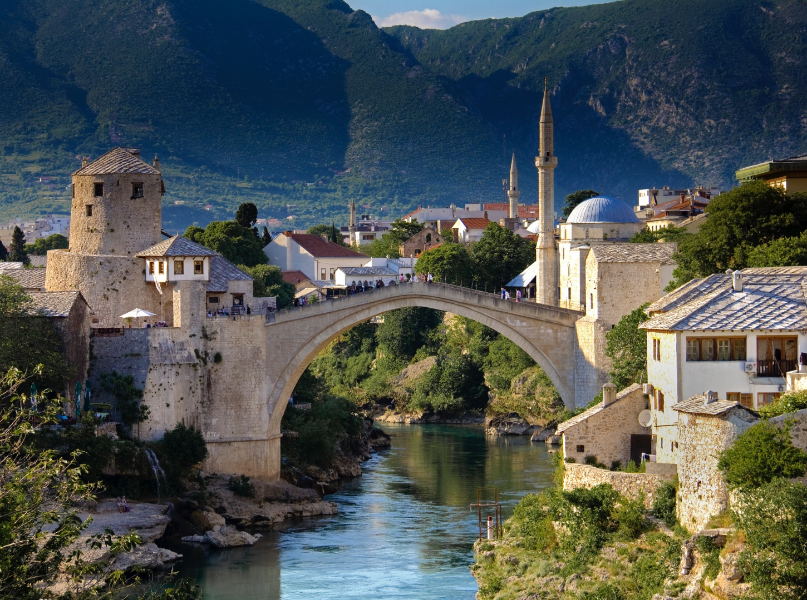
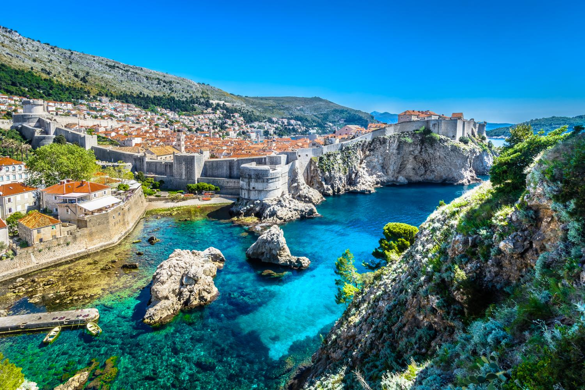
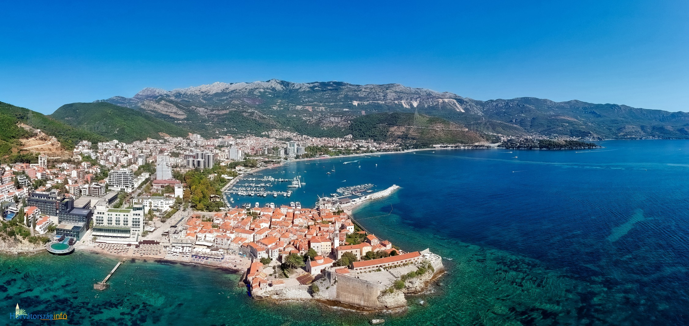
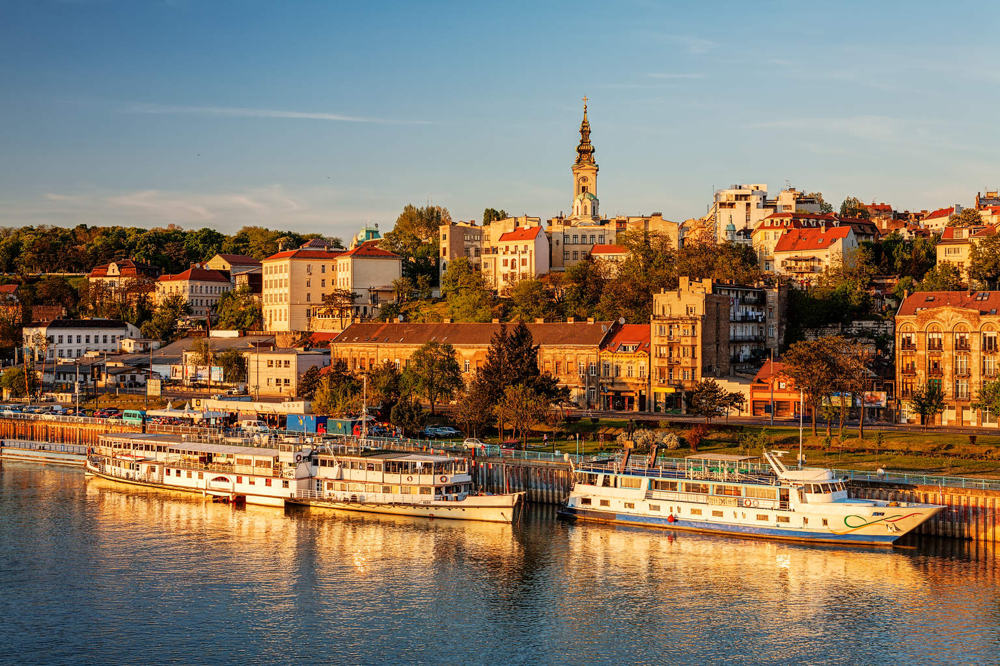
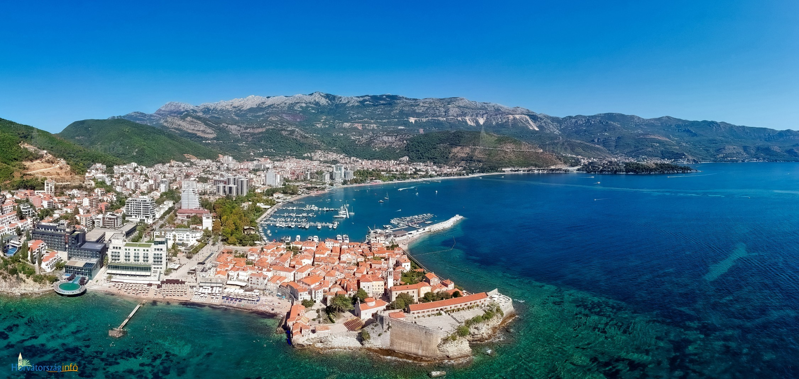
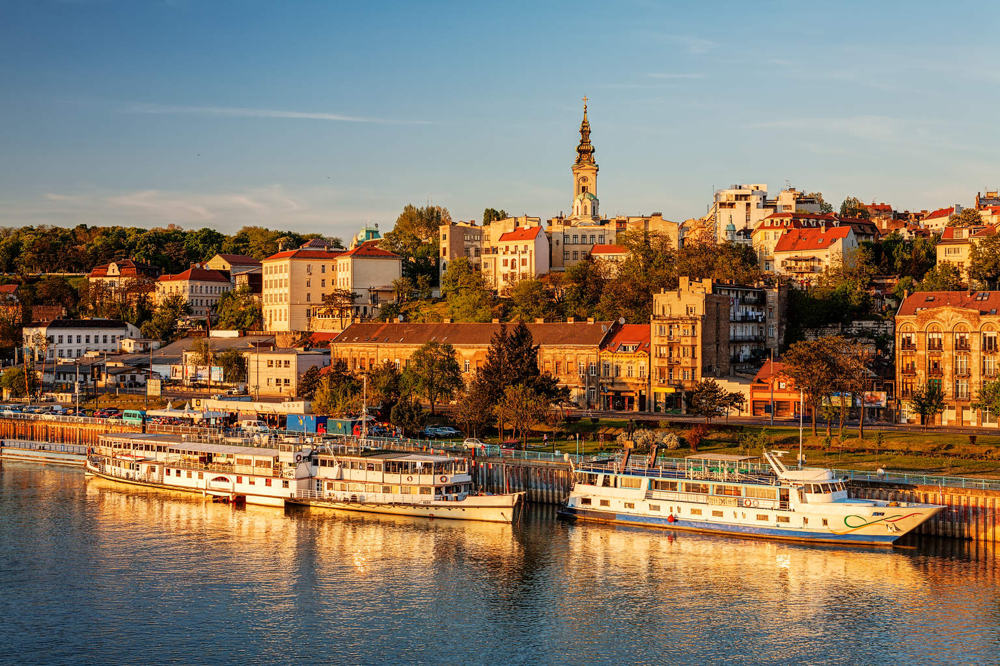

Balkán roadtrip - nyugat
Legtöbbünknek negatív asszociácója van akkor, amikor valaki azt mondja: Balkán.
Döntsük le ezt!

Időtartam
9 nap
Várható költség
70 000 Ft
Érintett országok száma
5 darab:
Szlovénia, Horvátország, Bosznia-Hercegovina, Montenegró, Szerbia
Leírás
A túránkat Budapestről indítjuk meg, szerintem egy szombat reggel. Aznap, nagyjából 5-6 óra autózás után érkezünk meg Ljubljanaba, Szlovénia fővárosába. Az egész napot ott töltjük, majd ott is alszunk. Másnap még egy kicsit nézelődünk, reggelizünk, s irány Zágráb, ami mindössze 2 óra kocsiút. Ott ebédelünk, elfoglaljuk a szállást, s a vasárnap további részét ott töltjük. Hétfőn délután utazunk tovább Szarajevóba, ahova estefelé fogunk megérkezni. Ott alszunk, másnap egész nap Szarajevóban járkálunk. Itt opcionális program leugrani egy 25 méter magas hídról ;). Kedden megyünk tovább Dubrovnikba, ahol megnézzük a várost, úszunk egyet, illetve naplementézünk. Másnap, szerdán pihenünk egy nagyot itt. Csütörtökön reggel indulunk Kotorba, ami 1-2 óra autóútra van. Megnézzük a tavat, este Budvában alszunk. Pénteken egész nap Budvában leszünk. Szombaton reggel indulunk tovább Belgrádba, ahol ott töltjük a napot, illetve a másnap délelőttöt is. Vasárnap 1-2 körül indulunk Pestre, hogy este 6-7-re mindenki itthon legyen.
Fotók
    


